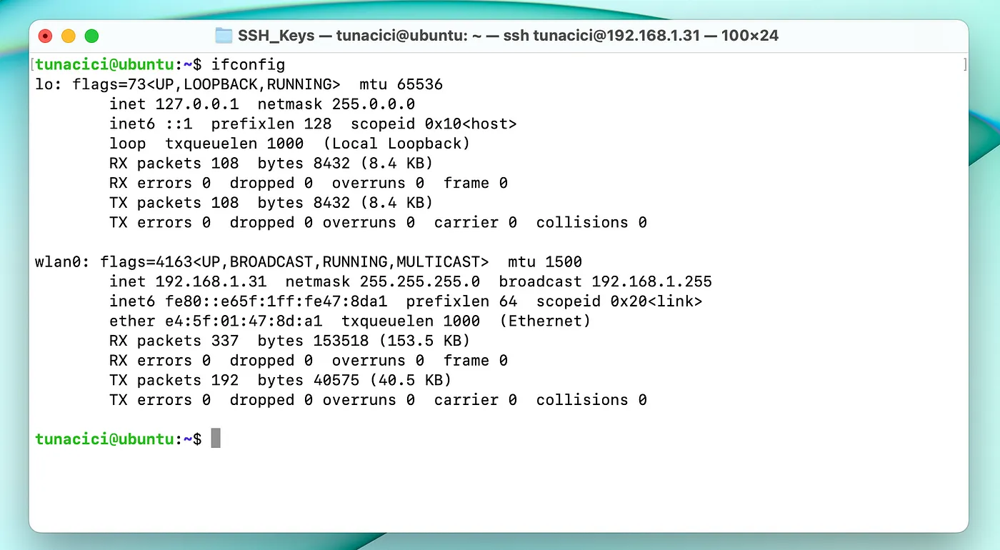

Linux Networking ELI5 — Part 1, Networks & Interfaces
As we all know, Linux is a very powerful operating system. Even if it’s not as popular as Windows or macOS, it’s importance and power is no joke. Heck, it might even be the most important OS ever (depending on the person you ask) and there is a good justification for that.
Daily Time Spent Online — Source: oberlo.com
Look at the visualized data above. You can clearly see that we spent a lot of time on the internet. This means that, we are interacting with tons of server all around the world. And guess what OS does those servers are running? Linux! And they are all using it’s networking tools.
Okay, basically what I’m getting to is, Linux networking is pretty darn important. Especially if you are a developer.
Here in this 4 part series, I will try to ELI5 some basic networking ideologies, the Linux networking, network tools, configurations. Last part will be about common use cases. Together we will deploy a Minecraft and an HTTP server on the cloud using the information gained from this article.
Do note that this article is not an advanced topic on Linux networking and its internals. This is merely an ELI5 for those who are curios about networking
Here’s a brief look at this ELI5 series. (I will add their links very soon)
Navigate to Part 1 — Networks & Interfaces
Navigate to Part 2 — IP, NAT & DHCP
Navigate to Part 3 — Ports, TCP/UDP & Firewalls
Navigate to Part 4 — Minecraft & HTTP Server
TLDR;
Networking: Communication that happens between two or more individuals.
Networking (computers): Computers talking to each other.
Network: A collection of computers that are connected to each other
Local Networks: A type of network (small size & distance) (ex. home)
Private Networks: A type of network (medium/large size & distance) (ex. company)
Public Networks: A type of network (large size & open to everyone) (ex. internet)
Network Interface: Hardware device that connects computers to network
lshw: Command for displaying hardware devices in Linux (ex. network)
ifconfig: Command for configuring network interfaces in Linux (legacy)
ip: Command for configuring network interfaces and more in Linux (modern)
The Setup
Since networking requires multiple devices connected to each other, I have setup an example network. This way I can give better visual examples and help in this journey.
My Basic Network Setup
I have two local machines that are connected to each other via my home router. One machine is Apple’s Macbook Pro running macOS Ventura 13.1 and the other one is my faithful Raspberry Pi 4b running Ubuntu Server 22.04.
I also have a cloud machine running Ubuntu Server 22.04 same as my Raspberry. I hid it’s public IP address due to privacy and security concerns.
Throughout this journey I will be showing examples using these machines. At the end of it all, together we will deploy a Minecraft server and a basic HTTP server using Flask on my cloud server.
What is networking?
Just like in human relationships, networking basically means talking with others. It is a communication/relationship that happens between one or more humans. In our case, however, it is not humans, but computers that do the talking and communication.
When computers talk to each other, we call it ‘networking’. And when many computers come together to communicate, they form a ‘network’. We can compare a ‘network’ to a group chat. You can have family group, a school group or a bigger Discord gaming group.
Group Chat is Basically a Local Network — Source: macrumors.com
Now, we have different kinds of networks with different sizes and purposes. The most popular ones are: local networks, private networks and public networks. Let’s go over them briefly.
Local Network
These types of networks are relatively small in their sizes and made up of devices that are in close distance to each other. For example, your home network that connects your laptop, phone, TV, printer, Amazon Alexa and etc. These devices can connect to each other with devices like routers and switches to form what is known as a ‘local network’.
Sometimes a ‘local network’ is also called a Local Area Network (LAN).
A Typical LAN Party (good times) — Source: dazeddigital.com
When you and your friends come together for a LAN party to play Call of Duty, you are actually forming a local network using devices like switches and routers.
Private Network
Let’s say you have a company. You have hunders computers and people to use them. As a good CEO, you want to separate your employees into different department so that the engineers doesn’t do any HR stuff and the HR people doesn’t do engineering stuff. You also want to separate their computers so that only the engineer’s computers can talk to each other. It makes sense, right?
Now, we can form a local network within engineers and another local network for HR people. This time however, as a CEO, you want to access each of these networks from your own computer. And also you want some of these networks to access the internet and some don’t. Okay, things are getting a little bit complicated here.
What’s the solution? A Private Network.
Most Companies Uses a Private Network for Security — Source: medium.com by Shridgar Grupta
Private networks are basically multiple local networks that are connected to each other. These types of networks are used mostly within organizations, companies and schools. They keep their networks as isolated as possible (especially from the internet) so that no average Joe would be able to access it. Thus, making this type of network a ‘private’ one.
Another way to think about private networks is that they are basically one giant local network.
Public Network
Think of a place where everyone around the world can come together and talk to each other. Of course we can’t physically do that, but we can use the Internet! When we share a post on Reddit everyone around the world can see it, right? So, we are basically connected to everyone. We can communicate with each other over the Internet.
We Can Compare Public Roads to Public Networks — Source: medium.com by NASA
The public networks are big networks that anyone can join at any time. The biggest example to a public network is the internet. Almost everything we use (iMessage, Overwatch, Reddit, Instagram) uses a public network that is the internet. What separates this network from others is in its publicity: anyone can join this network; it’s public.
Public networks are very special compared to local and private networks. Since they are public, there must be organizations and governments that helps maintaining it. Otherwise, the Internet can turn into chaos!
One of The Biggest ISP: Comcast — Source: reuters.com
The organizations that maintains and ‘builds’ the public internet are known as Internet Service Providers (ISPs). Each ISP is responsible for building new networks, fiber-optic cables and giant access points (5G LTE). In doing so they are widening the Internet (biggest public network ever).
Of course, they are not building a public network for charity. The government gives them permissions to build cables, network buildings and LTE antennas everywhere. Oh, and also you give them money for using their network… The internet is not free after all.
Network Interfaces

A Wireless Network Device — Source: ifixit.com
Okay nice, we have all these cool networks. But how can we join them? So, we can play Minecraft over the LAN with the gang.
Well, first things first, we need a physical network device called ‘a network interface’. These devices allows us to connect to physical networks. Your iPhone has one, your Xbox has one and your laptop probably has more than one.
Most Modern Computers Have Wi-Fi and Ethernet Built-in — Source: msi.com
If you search ‘network interface’ on Amazon, you can see all the different devices out there. Each network interface out there has its pros and cons. For example; one might be wireless but slow and other is wired but fast.
Most modern computers/devices have a built-in network device such as: Wi-Fi, Ethernet CAT6 and Thunderbolt 4.
Alright cool. I have a network device that helps me connect to networks. But can I check them? See their model numbers, their network configurations and if they are running correctly or not?
lshw
This Linux command is used to gain information about the hardware devices. You can use it for almost every hardware, but we will only be using it for network devices.
Below Linux command displays all your network devices. It is recommended to run it as ‘sudo’.
$ sudo lsfw -class network
You can see that I have two devices (interfaces) on my Raspbbery Pi 4b. Look at the lines that start with ‘*’. Each of these lines corresponds to a network device.
ifconfig
This commands displays all your network interfaces connected to your Linux. Compared to ‘lshw’, the ‘ifconfig’ command gives a more network related information about your network devices. It comes with the ‘net-tools’ packages, which can be installed via ‘apt’, ‘yum’ or ‘net-tools’.
Here is an example usage of the ifconfig command.
$ ifconfig

‘ifconfig’ Command Output
Here you can see that my Raspberry Pi 4b has only two network interfaces. The one called ‘wlan0’ is my Wi-Fi adaptor and the ‘lo’ is my machine’s localhost. It’s not a real/physical device, but a virtual one. It is used for applications inside the OS (we will talk about it in part 3).
The ‘lshw’ command did not show ‘lo’ because it is not a real hardware device. The ‘ifconfig’ command did not show ‘Ethernet Device’ because it’s not setup yet.
‘localhost’ is Not a Real Network (Device) But it Acts Like One! — Source: thecodinglove.com
You can get tons of useful information using the ‘ifconfig’. For example; device status, IP address, MAC/Physical address, how much data is being sent (TX) and how much received (RX).
The ‘ifconfig’ can do many different cool things. However, I will not be showing them because there is a ‘better’ command at our disposal.
ip
This command is like the One-Ring from The Lord of The Rings. It can be used for many different network-related operations. It can be seen as the superior command to ‘ifconfig’.
Throughout all parts of this article, I will be using the ‘ip’ command a lot. So, it is pretty important;)
Almost all Linux computers have the ‘ip’ command installed by default . So, it is the recommended and better way to configure Linux networking.
Let’s use this command to check our network interfaces.
$ ip addr show
‘ip addr show’ Command Output
Here you can see an additional device: ‘eth0’. The ‘ifconfig’ command did not show this because it’s not being setup yet. However, ‘ip’ shows ALL of your devices whether they are active or not.
Your machine can have many different network interfaces. For example; a typical server supports 8–16 different wired interfaces. A machine with tons of virtual machines running can also have many ‘virtual’ interfaces.
My Macbook machine have 20 interfaces! Mostly from VPNs, virtual machines and macOS network settings.
Just like any hardware device, you can turn any of your network interface on and off. You should know that in Linux networking, turning on/off a network interface is also called bringing up/down. It’s basically a fancier way of saying it.
The below command is used for bringing down/up a network interface.
$ sudo ip link set dev <INTERFACE_NAME> up # Bring it up
$ sudo ip link set dev <INTERFACE_NAME> down # Bring it down
You Can See That I Can Bring an Interface Down
Here in the above picture you can see that the ‘ip’ command can bring a network interface down (see state UP|DOWN).
I have used an additional ‘grep’ command to highlight the state of the device.
Closing Words
So far, we have learned the idea behind networking, how it is used in computers and the types of them. We also learned what gives us the ability to join them (network interfaces), what are they, how can we check them out in Linux and turn them on/off.
Currently, these informations does not have much of a practical usage. In the coming parts, we will learn to use these network interfaces to do some real work!
I hope that you liked my article and learned something new. If you spot any errors or mistakes please, do let me know.
Take care ❤

Thanks for reading & Take care ❤
Follow me on X (formerly Twitter), if you like my works that is >.<